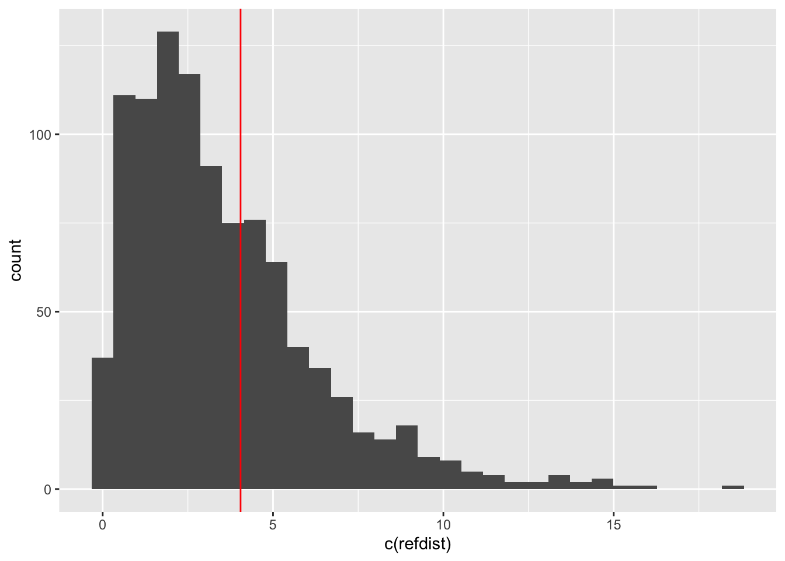

1.3 Inference with mixed models
In addition to its fundamental role in the estimation of parameters, likelihood also has a very general and powerful set of principles which allow us to contruct confidence intervals for parameters and assess the suitability of simpler, or more complex, versions of our current model. However, these methods are based on theory which may not always describe the situation well when we have mixed models. There are two broad approaches we might take to address this.
The first makes some progress by computing appropriate ‘degrees of freedom’ when comparing models. The Kenward-Rogers approach is popular. However, there may still remain underlying issues that the assumed distribution of the model comparison test statistic is not correct.
A second, very general, approach is to employ the bootstrap. If we repeatedly simulate new data from a fitted model, for each new dataset we can compute the model comparison statistic ((log-)likelihood ratio) for a more complex model. This builds up a picture of the distribution of our model comparison statistic when the simpler model is correct. This provides a reference distribution against which we can compare the value of the model comparison statistic on the original data.
The PBmodcomp function from the pbkrtest package can help us with this. Recall that REML should not be used when models with different fixed effects are to be compared, so the function will refit the model using ML if necessary.
library(pbkrtest)
model_r <- lmer(yield ~ (1 | blend), data = penicillin)
PBmodcomp(model_tr, model_r)## Bootstrap test; time: 8.61 sec; samples: 1000; extremes: 314;
## large : yield ~ treat + (1 | blend)
## yield ~ (1 | blend)
## stat df p.value
## LRT 4.0474 3 0.2564
## PBtest 4.0474 0.3147We can look at a slightly lower level of detail by displaying the simulated test statistics and comparing these with the one observed on our original data. Conveniently, the observed test statistic is available as one of the attributes of the simulations returned by PBrefdist. The attributes of refdist can be removed by applying the c function, before passing the vector to ggplot.
refdist <- PBrefdist(model_tr, model_r)
lrtstat <- attributes(refdist)$stat['tobs']
ggplot() + geom_histogram(aes(c(refdist))) +
geom_vline(xintercept = lrtstat, col = 'red')
Halekoh et a. (2014) provide a systematic description of the pbkrtest package, and examples of its use.
With a little more work, we can produce estimates of the individual random effects.
## (Intercept)
## Blend1 4.2878788
## Blend2 -2.1439394
## Blend3 -0.7146465
## Blend4 1.4292929
## Blend5 -2.8585859How do these compare with the estimates of the blend effects in our earlier simple randomised blocks model? As the result of ranef is a dataframe, and the estimated effects are mean centred, we will first produce differences from Blend 1.
## [1] -6.431818 -5.002525 -2.858586 -7.146465## blendBlend2 blendBlend3 blendBlend4 blendBlend5
## -9 -7 -4 -10Notice that the random effects model estimates the sizes of the random effects to be smaller. This effect is known as shrinkage. It is linked to the joint estimation of the random effects through a common distribution.